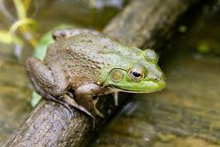

AMERICAN BULLFROG FACTS

Physical Traits
4–8 inches long
Green or brown skin
Strong hind legs
Habitat
North America
Ponds and lakes
Freshwater areas

Diet
Eats fish, birds, small animals
Ambush predator
Very strong appetite
Large frog from North America known for its loud croak

4–8 inches long
Green or brown skin
Strong hind legs
North America
Ponds and lakes
Freshwater areas
Eats fish, birds, small animals
Ambush predator
Very strong appetite
Named for its deep croaking sound like a bull.
Can leap long distances to catch prey.